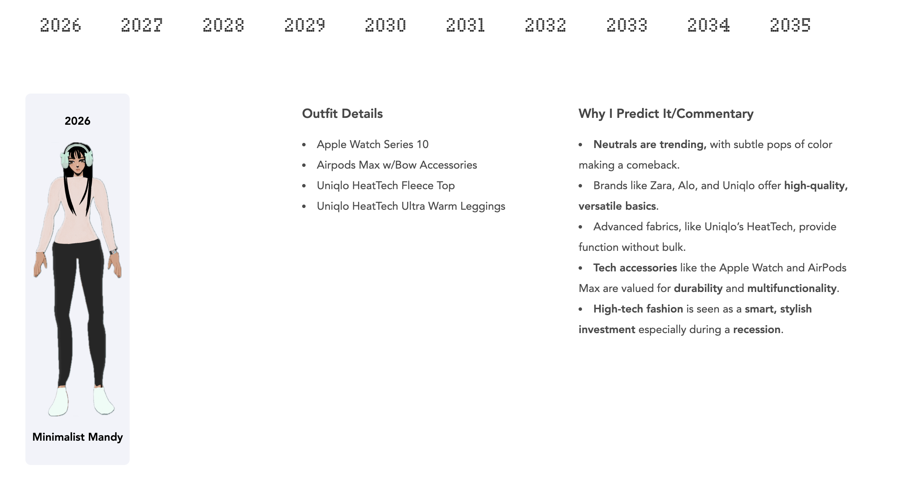
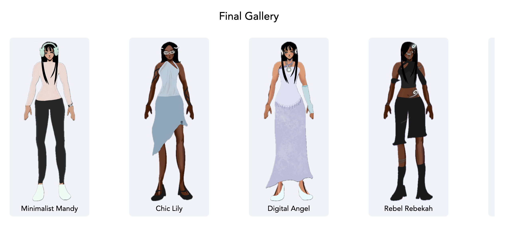

I had to improve the readability of each outfit description for the users. The text was overwhelming and scrolling through several of these could cause a loss of interest. So I opted towards changing the long paragraph descriptions to bullet points. I also bolded keywords I wanted the user to notice. in addition to that I added a top section of all the dates for the outfits listed. I wanted the user to be able to see all the following dates in line. Towards the end I also added a gallery so the user can see a summary of what they previously scrolled through.
 